Katie with her painting |
December 2023
Thank you, Tom Hazell for the wonderful Nov 27 talk on Birds of
Manly Lagoon; New volunteers needed; Farewell to volunteer Katie
Meyer who has contributed to our display area and has provided
environmental information to visitors over many years; survey of
native plants; James Griffen, MP - speech to parliament
recognising the contribution of NHSF volunteers over the years -
especially Jenny Wilson who writes these newsletters; article
from Sydney Morning Herald, from March 1901; Death in 1901 from
plague of James Ernest Derrington. |
|
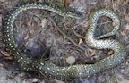
Python |
November 2023
Fire bans on North Head; Need for more volunteers in Bandicoot
Heaven; repair of North Fort sandstone wall; Pythons on North
Head; Third Cemetery - a death from bubonic plague in 1901. |
|
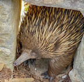
Echidna |
October 2023
New volunteers needed; Native Plant Nursery; Q-Station Open Day;
North Head Sanctuary Master Plan - have your say; Thank you Dr
Helen Smith for the fascinating talk about Spider Silk on Sept
16; Echidna seen in the sandstone wall; Back in Time - an
article written in 1933; The Third Cemetery - the Bubonic Plague
of 1900. |

Spring flowers |
September 2023
Annual General Meeting - September 16, 2023 - at 2pm in
Bandicoot Heaven; The speaker will be Dr Helen Smith, Technical Officer in the Arachnology section of the Australian Museum and her topic will be
Spiders and their Silky Secrets;
New volunteers needed; Spring Wildflower
Walks; Open Day at the Quarantine Station - Sunday
September 10, 2023; Philotheca buxifolia; Red Cross
supported people returning from the First World War in 1919.
Some died in Quarantine. |
|
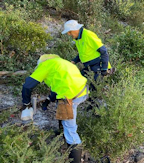
Volunteer weeders |
August 2023
Annual General Meeting - September 16, 2023 - at 2pm in
Bandicoot Heaven; The speaker will be Dr Helen Smith, Technical Officer in the Arachnology section of the Australian Museum and her topic will be
Spiders and their Silky Secrets;
Volunteers plant specimens from our Nursery at North Head and
pull out weeds;
Spring Wildflower
Walks; Open Day at the Quarantine Station - Sunday
September 10, 2023;
Pterostylis concinna;
Whisky Grass - a weed;
The Plague cases at Quarantine Station in 1900. |
|
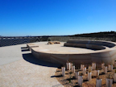
New Lookout |
July 2023
Education Room and Nursery - volunteers invited to help on
either of these activities; Back in time - 1900 when there was
the plague in Sydney; New Lookouts at North Head together with
revegetated surrounds; The demise of the Christmas
Beetles; Third Cemetery - William Brown died from the Plague;
Northern Beaches Council ‘Caring for our Bushland’ 2023 EcoAward
winner - Jenny Wilson. |

St Andrews Cross Spider |
June 2023
General Meeting June 17 at 2pm in Building 20 - Speaker: Wendy
Grimm BSc, MPhil from Australian Plants Society with the topic
being Orchids; Spiders often seen on North Head; Nursery Group
volunteers; Remembering Rory Linsky who volunteered with our
organisation; Third Cemetery - plague victims who died in
Quarantine in 1900AD. |
|
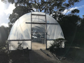
Igloo with new cover |
May 2023
Igloo cover replaced; Echidna; Processionary caterpillars;
Ku-ring-gai Wildflower Garden walks; Third Cemetery - 1900 -
bubonic plague deaths of William Hayden and Walter Haynes - both
were in their early 20s. |

Fleabane |
April 2023
Thank you, John Dengate; Plants supplied by our volunteers for
North Fort upgrade; Fleabane - a weed; Acacia terminalis;
Aboriginal place names; Third Cemetery - plague victims in 1900 |

Gift of $10,000 from Max.
Matthew, Max and Jenny |
March 2023
Special General Meeting on March 18 to vote on changes to the
constitution and the speaker will be John Dengate talking about
Northern Beaches' Wildlife;
Max Player has donated $10,000
to our organisation for nature conservation; Stage 1 of the
Lookout upgrades is complete; A liking for lichens article;
"Species at Risk" art exhibition at The Botanical Gardens Mar 18
- Apr 2; |

Casualty ward |
February 2023
Education Room; Plant Nursery; Defence of Sydney; Underground
facilities in the tunnel system at North Head including a
Casualty Ward: Third Cemetery - during the Plague, burials in
graves numbered 97-100; Haemodorum planifolium |
|
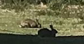
Rabbit |
January
2023
In December, Peter Mitchell gave a
fascinating talk on the geology of North Head.
Click here for a summary of Peter's talk; Rabbits;
Echidna;Young Adult Hospice on North Head; Platysace
lanceolata,Third Cemetery - Plague victims |

New Holland Honeyeater |
December 2022
General meeting Dec 3 - Dr Peter Mitchell speaking about the
geology of North head; Echidna survey; Native Plant Nursery; New
Holland Honeyeater; Surveying wild orchids; Orchid photos; North Head Scenic
Lookout; Cryptostylis subulata; Third Cemetery -
smallpox 1884 |

Frog Spawn |
November 2022
General Meeting Dec 3, at 2pm in Building 20; Dr Peter Mitchell
will speak about the geology of North Head; Dr Judy Lambert
achieves an Eco Award from Northern Beaches Council - Well done
Judy!; Identifying frogs; Third Cemetery - John Gaynor and his
contacts were quarantined at North Head in April 1900 due to
Bubonic Plague. His contacts were released but John died.
|

Oval planted area |
October 2022
Native Plant Nursery planted area next to oval - many flowering
plants; Echidna survey; Australian Wildlife Conservancy news;
Thelionema umbellatum; Kennedia rubicunda; Third
Cemetery - report from 1919 during Influenza epidemic where
restrictions impacted Anzac Day celebrations. |

Lapwing chick |
September 2022
Annual General Meeting - Sept 17 at which Ann Jackson will speak
about Medidivert which is a system for reducing waste from
medical facilities; Spring Wildflower walks - Monday 3 Oct 2pm:
Sunday 9 Oct:10am, Wed 12 Oct: 10am; Lapwing chicks have
hatched; The curiosities behind what we can see in Nature;
North Head Scenic area carparks, pathways and bus stop are now
open; New Lookouts are under construction; Third Cemetery -
Joseph Stock died of influenza. |

Echidna |
August 2022
Annual General Meeting Sept 17 - Anne Jackson will talk about
the MediDivert system for managing hospital waste; Native
Plant nursery supplied over 800 plants to NPWS for the renewed
viewing areas on North Head; Spring Flower Walks; Echidna survey
on North Head; Third Cemetery - death from Flu; After the burn. |

Black Cockatoo |
July 2022
Thank you to Tom Keneally for interesting talk in June; Repair
of collapsed frog pond bank and planting it out; Upgrades to the
Wastewater Treatment Plant; Bondi to Manly Walk - signs erected
at North Head; Third Cemetery - deaths from plague in 1900. |

Frog |
June 2022
Thank you to volunteers; World Environment Day - June 5 -
bushcare targetting whisky grass; Meeting on June 18 - speaker Tom Keneally; Q-Station
Open Day - June 5; Volunteers welcome in Education Room and
Native Plant Nursery; Frogs on North Head; Third Cemetery -
Sydney dealing with smallpox |

Ants |
May 2022
Education Room; Native Plant Nursery - new frog pond;
Formication of ants; Follow the leader caterpillars; Third
Cemetery - arrival of "Stirlingshire". |

Diamond python |
April 2022
Thank you to John Faulkner for fascinating talk; Bandicoot
Heaven; Native Plant Nursery; Storm damage to planted areas;
Hanging Swamp track now open; Tricoryne elatior;
Diamond python; Third Cemetery - mistake in record of child
death in January 1886. |

Bondi to Manly walk |
March 2022
General Meeting March 19 - Speaker John Faulkner - Topic Bondi
to Manly Walk;
Bandicoot Heaven re-opening; Nursery
volunteers welcome; Plant Names; Rain impacts on North Head;
Frog Pond construction; Third Cemetery - young man, Sydney
Burrows, died in 1898. |

Annie Egan plaque |
February 2022
North Head Scenic Area upgrade; Firemen quarantined at North
Head in 1918; Remembering Annie Egan and Elizabeth McGregor, who
were nurses died during the Influenza pandemic in 1918; In 1918,
there was an appeal for pyjamas needed for people in quarantine;
Garden escape - Agapanthus - seen at North Head. |

Habitat Pods |
January 2022
Native Plant Nursery; North Head Scenic Area update; Habitat
Pods for animals after bushfire; Eastern Suburbs Banksia Scrub
now Critically Endangered; Papuan medical students accommodated
at the Quarantine Station; North Head Sanctuary Foundation
approaching 20 years of action. |

Garigal Landcare group |
December 2021
Annual General Meeting - Malcolm Fisher speaking about Manly
Dam; Nursery visitor - an echidna; Welcome Sparrow; Back in Time
- Pandemic in 1919; Garigal Landcare group removes weeds on
North Head; North Head Wastewater Treatment Plant installs new
equipment; Monotoca elliptica; Third Cemetery -
unvaccinated person dies from smallpox. |

Australian Painted Lady |
November 2021
North Head Sanctuary Foundation Annual General Meeting December
11; Bandicoot Heaven still closed; Vale Christabel Casimir;
Upgrade to Scenic Area at North Head in Sydney Harbour National
Park; Woollsia pungens - and using Latin names for
plants; Vanessa kershawi or Australian Painted Lady;
Third Cemetery - John Casey; Flannel Flowers flourish after
bushfires |

Juvenile Plovers |
October 2021
Native plant nursery; "My North Head" by Peter Nash; Birds of
North Head; Solanum aviculare; Third Cemetery - baby
John Lindsay Christie; retirement of Lindsay Christie; burial of
George Mark Burman |

Bar-shouldered doves |
September 2021
Native plant nursery; Spring is here; Echidnas; Birds of North
Head; Controlled burn areas - "before" and "after" photos
showing regrowth. |

Kookaburras |
August 2021
Nursery; Medicine in the Sanctuary; Life in Quarantine;
Congratulations to Aunty Fran Bodkin; "Knowing our Country" |

Whale |
July 2021
Whales seen from North Head; Education Room; Native Plant
Nursery; Quorum sensing; Atua and Influenza |

Cellular Slime Mould |
June 2021
Sanctuary definition; Community consultation on plans for North
Head; Education Room; Native Plant Nursery; Fire as a tool in
recovery of Eastern Suburbs Banksia Scrub (ESBS) ecological
community; Cool fires versus Hot fires; Cellular Slime Moulds. |

Fairfax Lookout |
May 2021
Education Room; Native Plant Nursery; North Head Fairfax Lookout
area Upgrade; Lone Pine; 1790s Port Jackson 4 pounder; Third
Cemetery - "The Makura"; Back in Time - serious allegations
about treatment at the Quarantine Station. |

Backobourkia |
April 2021
Nursery - the pond area after heavy rain;
Backobourkia (an orb spider);
About how much
earth is moved by an Echidna in a year?;
Wolf
Spider; Quarantine in 1971; Third Cemetery - Private
Robert Fairley |

Memorial Walk plaque |
March 2021
NHSF AGM on March 13; Education Room opening from
March 6 onwards; Nursery group would welcome new volunteers;
Garigal Landcare are stepping in to remove weeds from the burn
areas and would welcome volunteers; Pimelea curviflora;
Memorial Walk; Tunnel Tours now include Plotting Room; Scenic
Area upgrade; Third Cemetery - James Cahill |

Dinty's house |
February 2021
Interpretive centre still closed due to Covid-19; Nursery
volunteers are working Tuesdays and Fridays; Carpenter Bee;
Family stories from Quarantine Station days living in Dinty's
House; 1919 death in Quarantine Station |

Nursery volunteers |
January 2021
Interpretive centre may open later in January if it is Covid-19
safe; Christmas party for Nursery Volunteers; 135 bus replaced
by 161 bus; Echidna research; Natural bushland recovery after
fire; Influenza pandemic in 1918 - vaccine rollout. |

Domino Cuckoo Bee |
December 2020
Native Plant Nursery closed from Dec 22 through to Jan 5, 2021;
Regrowth after September fire; Domino Cuckoo Bee; Yellow-tailed
black cockatoo; Wildlife and the fire; Influenza Pandemic
1919 |

QR Code sign |
November 2020
Echidna helps with Asset Protection Zone; Hazard Reduction Burn
escapes; Have your say about North Head Sanctuary; $40.6m
for Harbour Trust Heritage Sites;
Bushland will recover; Net
experiments on North Head; Installation of QR Code signs helping
people to get to know our plants. |

Regrowth after controlled burn |
October 2020
Spring in the Nursery; Controlled burn of bushland;
Actinotus helianthi flourishing after fire; Reminiscences of growing up on North Head by John Neil Harris |

Obelisk |
September 2020
Heavy rain caused flooding in the nursery; Pandorea
pandorana; Seeding mosses; Obelisk with engravings by
soldiers who were quarantined in 2018; Acetosa sagittata
or Turkey Rhubarb - a weed |

Third Cemetery |
August 2020
Nursery; Sands under the microscope; Bitou Bush & Boneseed
(Chrysanthemoides monilifera, subspecies rotundata &
monilifera); Back in Time - Parks and Playground Movement report
from 1935; Third Cemetery - two nurses, who looked after
patients with Influenza, contracted the disease and died. |

Black cockatoo |
July 2020
Native Plant Nursery; Calyptorhynchus funereus (Black Cockatoo);
Imperata cylindrica - not a weed, but a taste of history; Back
in Time - stories from Newspapers - Neglected Cemetery in1911
and The Plague in 1900 |

Female Superb Fairy Wren |
June 2020
Education Room (plus front door) repainted; Native Plant Nursery
volunteers working but with restrictions due to Covid-19; Birds
of North Head; Bird of Paradise Flies; Lantana camara;
Back in Time - 1918 Spanish Influenza epidemic |
 
Planting 2014 Plants in
2020 |
May 2020
Native Plant Nursery; Planting
in 2014 and what the area looks like in 2020; Photos from North
Head; Pampas Grass and its negative impacts; Sydney Morning
Herald article from 1930 about the Quarantine Station and its
carvings. |

Echidna |
April 2020
Education room closed but plant identification link provided;
Heliotropium amplexicaule - weed; Nursery on "care and
maintenance" only due to Covid-19; Eating the wildlife; Book
review of "Healings and Burials at Sydney’s North Head"
by Lady Jean Duncan Foley; Third Cemetery - Mr Arthur Reid;
Independent Review of the Environment Protection and
Biodiversity Conservation Act 1999 |

Caper White Butterfly |
March 2020
General meeting, March 7 at 2pm - speaker Aunty Fran Bodkin;
Native Plant Nursery - plantings and overflowing frog pond
during the rain; North Head birdlife; Caper White butterfly;
1939 - Trespasser on North Head military land; Smallpox patients
in Quarantine in 1901. |

Indigenous dancers performing on North Head on January 26. |
February 2020
General meeting, March 7 at 2pm - speaker Aunty Fran Bodkin;
Aboriginal use of Grevillea buxifolia; new botanical
greeting cards available in Building 20; Invasion Day
ceremony on North Head on January 26; Independent review of
Sydney Harbour Federation Trust; Rainfall statistics for North
Head; Third Cemetery - plague victims in 1900.
|

Memorial Walk |
January 2020
Manly's 26th Ocean Care Day; Australia's memorial walk; Manly to
Bondi Walk; Australian Brush Turkey; Third Cemetery - cases of
plague |

ICMS volunteers |
December 2019
Ocean Care Day - Dec 1; Volunteer with Native Plant Nursery or
Education Room; Independent review of the Sydney Harbour
Federation Trust; Calyptorhynchus funereus - Black
Cockatoo; Snake and spider awareness; Mosman High School
‘Environmental Expo’; Volunteer day - students from the
International College of Management Sydney. |

Plover family |
November 2019
Annual General Meeting on November 9 with
Colonel Peter Sweeney speaking about military history in Sydney
Harbour; Native Plant Nursery has the shade cloth installed for
the Summer; Morning tea with Dr Viyanna Leo; Ocean Care Day now
part of Ocean Week; Plover chicks; Life as part of Quarantine
Station staff family. |

Male pardalote |
October 2019
Native Plant Nursery; Education Room; North Head Bird photo -
pardalote; Annual General Meeting; Guided Wildflower Walks;
Styphelia triflora or Five Corners; Wildflower report from
1933; Building 20 now used as "Bandicoot Heaven" - 80 year
history; Third Cemetery - smallpox onboard the "Eastern". |

Wren feeding on nectar |
September 2019
Q
Station - Open Day- Life in Quarantine 10am – 2pm, Sunday 15th
September; Wren feeding on nectar of
Xanthorrhoea flowers; Imperata cylindrica;
Spring Wildflower Walks; Back in Time - housing in early
Sydney; North Head is a Botanist’s Heaven with nearly 500 native
species of plants. |

Recovery after fire |
August 2019
Meeting 2pm August 17 - speaker Carole Rollings from Manly
Little Penguin Watch; Acianthus fornicatus -
a tiny orchid on North Head; 15month post-fire survey; Third
Cemetery - Sydney Cecil Pepper, a plague victim |

Xanthorrhoea after fire |
July 2019
Education room; Mosman High School visit the Nursery; Water in
the hanging swamp; Whales seen off North Head; The 135 Stuarts'
bus; Third Cemetery - smallpox on the French steamer "Ville de
la Ciotat" |

Praying Mantis |
June 2019
Bandicoot Heaven; Native Plant Nursery; Praying/preying Mantis
on a Banksia flower; Donation of equipment to Indigrow; Third
Cemetery; Sydney Morning Herald report about the conditions on
the immigrant ship "Allanshaw". |

Tukey pecks Echidna |
May 2019
General Meeting on Saturday May 25; Things you find in Building
20 - our education centre called "Bandicoot Heaven";
Volunteering in the Native Plant Nursery; "My North Head" by
Kath Pearce, Turkey pecks Echidna; Building a Bee Motel; Trailer
needed to transport Nursery benches |

Nursery Group |
April 2019
Report from Society for Insect Studies walk held March 9;
Echidna rescued from being in a drain; Celebration event
after 20 years of dedicated work by the Nursery Group. |

Brush Turkey chick |
March 2019
Society for Insect Studies event - March 9, 2019; Brush Turkey
chick; Fire and ESBS on North Head - poster presentation at
International event in Darling Harbour; "My North Head";
Christmas Bells on North Head; Third Cemetery - Sister Elizabeth
McGregor - Part 2
|

Elizabeth McGregor |
February 2019
General meeting Feb 23 - Matthew Taylor speaking about birds of
North Head; Congratulations to Dr Paul Lancaster;
"Surviving Influenza at Quarantine Station" talk on March 5 at
Sydney Harbour Federation Trust offices; Update on Animal
re-introductions in North Head bushland; Avoiding ticks;
Vegetation surveying; Third Cemetery - Sister Elizabeth McGregor
- Part 1 |

Tick under microscope |
January 2019
Volunteers welcome for Education Room and Nursery; Ocean Care
Day; A word about ticks; Cryptostylis erecta;
Ecological Society of Australia’s (ESA) Annual Conference; Third
Cemetery - Pte Hector Fraser HICKS |

Sword Grass Brown Butterfly
|
December 2018
Ocean Care Day; Native Plant Nursery; Insects of North Head (The
Sword Grass Brown Butterfly, Tisiphone abeona, and the
White Tussock Moth, Acyphas sp); Back in time -
transfer of land; Third Cemetery - deaths from influenza;
Committee for 2018 - 2019 |

Liverwort |
November 2018
Annual
General Meeting - 2pm on Nov 10; Northern Beaches Council Eco
Awards; Triple J - new kid on the airwaves; Spring Wildflower
Walks; Liverwort; Brush-turkey App; Third Cemetery - smallpox
death in 1914 |

After the 2018 burn |
October 2018
Annual General Meeting - 2pm on Nov 10;
Spring Wildflower Walks; Caledenia carnea; Botanical
Survey of North Head; After the
burn is over ...; Native Plant Nursery; News from the Fire Front;
Citizen Science - call for ideas for small projects that could
be attempted on North Head; Back in time - a person in
quarantine "escaped" and went to the movies in Manly in June
1919. |

Boronia ledifolia |
September 2018
Spring Wildflower Walks; Boronia ledifolia; After the
burn is over ...; Native Plant Nursery; Back in time; Grass Tree
gum; Stony Range Botanic Garden Spring Festival; Q-Station 10th
Birthday Open Day; Third Cemetery - Italian reservists |

Grass trees after fire |
August 2018
Spring Wildflower Walks; Native Plant Nursery - Frog Pond area;
After the burn - Grass Trees (Xanthorrhoeas)
recovering; Back in time - the value placed on Zanthorrhoea
resin; North Head - a special cultural place; Third Cemetery -
baby died from measles; Stony Range Spring Festival |

After the burn |
July 2018
General Meeting, July 28, by Wendy Grimm entitled "Pollination –
not just the realm of bees!”; Education Room - new display of
wildlife; Thank you to Four Seasons Nursery; Wartime life at
North Head; Hazard reduction burns on North Head; Third Cemetery
- memorial wreaths in 1920 |

New track |
June 2018
Recognising & celebrating Aboriginal culture; Whale Watching
Season; New Track on North Head; Back in time; Julie Nettleton’s
Triptych; Third Cemetery - deaths from the Makura. |

Acacia terminalis |
May 2018
Replacing wooden benches in North Head Sanctuary nursery;
Enjoying North Head in 1933; Threatened Species Children’s Art
Competition 2018 from June 4 to August 3; Third Cemetery -
stories of the plague in April,1900. |

Phillip Jones |
April 2018
Next general meeting - April 21 - Speaker, Phillip Jones; New
walking track; Torres Strait Islander flag; The lungs of a
plant; Third Cemetery - getting permission to erect a
tombstone; King George VII carriage? |

Horse Sculpture |
March 2018
Information Room; Manly Flower Shows
from the past; Nursery News; Snake bite in the 21st Century;
Bronze Horse Scultpure; Third Cemetery - 100 years since
soldiers arrived home from the First World War with influenza. |

Discovery Day 2018 |
February
2018
General Meeting Feb 24 - walk around
planted areas; North Head Sanctuary Discovery Day; FrogID; Weed
- Anagallis arvensis
or Scarlet Pimpernel; Bubonic Plague; North Head Project - art
on display at Manly Art Gallery |

Visitor to Planted Area
|
January 2018
North Head Sanctuary Discovery Day;
Celebrating 21years; North Head Project; ESBS redefined; next
General Meeting Feb 24 will include a walk around our planted
areas; Third Cemetery - pneumonic influenza; |

Army truck |
December 2017
North Head Discovery Day - January 21,
2018; Tears at North Fort; The naming of species; The UAV
vegetation survey of North Head; Third Cemetery - rum and
innoculation |

Spring Wildflower Walk |
November 2017
General Meeting November 25 2pm -
speakers Vince and Julia Williams; Ocean Care Day - 3rd
December; North Head Project - 8th Dec, 2017 to 18th Feb, 2018 -
showcasing the work of 10 artists who are depicting aspects of
North Head; North Head Discovery Day - Sun 21 January 2018, 10am
– 4pm; more buses for North Head on Sundays and public holidays;
Spring Wildflower Walks; airport for North Head?; Third Cemetery
- Influenza
|

Pond area |
October 2017
Thank you to Jennifer Anson for a fascinating
talk; Cleanup of Pond area; Spring Wildflower walks; After a
fire; Third Cemetery - path paved;
SS Atua and influenza |

Bandicoot |
September 2017
Annual General Meeting at 2pm on
September 16 - Guest speaker will be Jennifer Anson speaking
about "Possums, rodents, bandicoots and dasyurids: Fauna
Restoration at North Head Sanctuary"; Thank you Aunty Fran;
Spring Wildflower walks; ESBS - changes to the list of species
recognised to be endemic to this classification; Third Cemetery
- Richard Perry died at North Head but was buried in the
Necropolis at Rookwood Cemetery. |

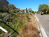
2015
2017
Planted area near old gym |
August 2017
Nursery group's planting outside the old gymnasium - March 2015 and now
(July 2017); Spring Wildflower walks - September and October;
Hazard reduction burns planned for North Head; Third
cemetery - Ellie George; Keeping count of people visiting North
Head. |

Tawny Frogmouth |
July 2017
Annual General Meeting - September 16
- 2pm in Building 20
Speaker Jennifer Anson - Topic
Re-introductions on North Head;
Education Room; Finding a
Tawny Frogmouth; Native Plant Nursery;
Third Cemetery - in
pursuit of the missing headstones |

Pygmy Possum |
June 2017
General Meeting - 2pm June 10th in
Building 20 - guest speaker, Helen Vickers; Nursery people work
on the Oval; Walk and Talk - Sunday June 18; Eastern Pygmy
Possums back on North Head; Strangled! - the demise of a
seedling Eucalyptus
camfieldii; Third Cemetery
- deaths from smallpox in 1913. |

Austracantha minax spider |
May 2017
Datura stramonium - nasty weed;
Austracantha minax - a spider; Third Cemetery - Margaret
Whitehead; John Baptist Adonis’ grave marker is now upright
|

Yellow-faced whip snake
|
April 2017
Cats
and dogs - threats on North Head; Yellow-faced whip snake; Third
Cemetery - more about Jean Baptiste Adonis; Stone masons at work
repairing grave stones. |

New bush regeneration site |
March 2017
March 1 Meeting 7pm in Building 20 -
several walking and bush related videos; New bush regeration
site; North Fort Road; The other obelisk; Missing headstone
found!
|

Guided walk |
January/February 2017
Next meeting March 1 at 7pm will feature local residents;
bushwalks led by NHSF for various groups; Native Plant Nursery
progress; Rainfall monitoring on North Head; Third Cemetery -
consumption claimed 2 lives in 1919; Making crystals an unusual
way. |

Tawny Frogmouth |
December 2016
Education Room; New Brochure; Return of the Tawny Frogmouths;
Native Plant Nursery; Piece be with you; Third Cemetery -
bubonic plague |

Walk for women |
November 2016
Ocean Care Day; Spring Wildflower
walks report; Sydney International Walk for Women; Nursery
Group; Whisky Grass; Third Cemetery - suicide of Peter Chervin;
NO DOGS on North Head
|

Rockfall Aug 2016 |
October 2016
Annual General Meeting - 2pm on 8th October - in Building 20;
Rock fall on North Head; Water on North Head |

Repairing nursery |
September 2016
Annual General
Meeting - 2pm on 8th October - in Building 20; Nursery - break
in and repairs;
Boronia ledifolia;
Spring Wildflower Walks; Manly Environment Centre celebrates
25yrs - Sept 25 1pm-4pm; Third Cemetery - another plague victim;
High Rise buildings for North Head proposed in 1956; Venemous
spiders - part 4
|

Red Back Spider |
August 2016
First Cemetery; Barbarian of the bush
- Tea-tree; Third Cemetery - Pte Walter McCroanan; Venemous
spiders - part 3 |

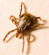
Bird of Paradise fly and a Tick |
July 2016
Guringai Festival Walk; Venomous spiders
- part 2; Bird of Paradise Fly, Ticks, Congratulations to Manly
Environment Committee for 25 years service; Third Cemetery -
Bubonic Plague |
 Bank planted 2013
Bank planted 2013
|
June
2016
Guringai
Festival Walk; Frank Langham Burdett – his mark; Eastern
Suburbs Banksia Scrub recommended to be listed as critically
endangered; Second Cemetery; Third Cemetery - John Lindsay Christie;
Miniature Range building; Venomous spiders - Part 1 |
 Julie Nettleton
Julie Nettleton
|
May
2016
Next meeting
- May 11 at 7pm - speaker, Peter Macinnis; Native Plant nursery
invitation for people to join in; Odours at North Head; Little
wattlebird; Gold Medal for botanical art for Julie Nettleton;
Survey mark at Collins Flat; Thistle Saga Part 4 and other weeds;
Third Cemetery - The Preussen - Part 4 |
 Golden
Orb Spider
Golden
Orb Spider
|
April
2016
General Meeting
May 11at 7pm - speaker Peter Mcinnis; Golden Orb Spider; Clean
Up at North Head; Protection of North Head's native fauna; Scotch
Thistle - part 3; Third Cemetery - Smallpox from The Preussen |
 William
Mills' headstone
William
Mills' headstone
|
March
2016
Clean Up
North Head on March 6; Rain Gauge; Thistle Saga - part 2; Third
Cemetery - Smallpox - William Mills and others in January 1887 |
 Mystery
radar
Mystery
radar
|
February
2016
General
Meeting February 6; Native Plant Nursery volunteers working
on the Oval; Congratulations to July Reizes - 25yrs service;
Caustis flexuaosa; Clean Up Australia Day on March 6;
Mystery posed Nov 2010 now solved; The Thistle Saga; Third
Cemetery - Ferdinand Mercker - small pox
|
 Boxing
Day Yacht Race
Boxing
Day Yacht Race
|
January
2016
Boxing Day at North Head; My North Head by Alan Ventress;
Christmas Bells on North Head; Native Plant Nursery; Third Cemetery
- Alfred Eric Brown; Answer to mystery plant photo |
 Sand on
North Head
Sand on
North Head
|
December
2015
Ocean Care
Day on Dec 6; Planting on the Oval; Cryptostylis subulata;
Magpie death; Soil changes on North Head over time; 1899 bushfire
on North Head; measles and scarlet fever at the Quarantine Station
in 1913; Mystery photo from North Head. |

Surveying regeneration
|
November
2015
Invitation
to tour Waste Management Plant on Nov 14; Ocean Care Day on
Dec 6: North Head Sanctuary Foundation Nursery; Report on Spring
Wildflower walks; Plover Chicks are thriving near Bella Vista
Café; Cockroaches; Survey of after effects of measures
taken to reduce impact of rabbits after fire in Eastern Suburbs
Banksia Scrub areas. |
 Dr Jennifer
Anson
Dr Jennifer
Anson
|
October
2015
Spring Wildflower walks; Planting on the oval to provide cover
for bandicoots; Then and Now - planting in Feb 2013 compared
with the same bank in September 2015; Round the Twist - part
4; Second phase of introductions of Native bushrats to North
Head by Dr Jennifer Anson of The Australian Wildlife Conservancy;
Caesia parviflora |
 Costa Georgiadis
visit
Costa Georgiadis
visit |
September
2015
AGM September 12 at 2pm; Spring Walks; Q Station Community
Day; Nursery needs wire coat hangers; Gardening Australia's
Costa Georgiadis visit - to be screened on Sept 19 on ABC at
6:30pm: Patersonia glabrata; Twining and twisting - flora
and fauna; Third Cemetery - Ah Yet from the Chinese Liner,
Taiyuan. |
 Antechinus
stuartii
Antechinus
stuartii
|
August
2015
Spring
Walks; The Missing Antechinus holotype; Reporting wildlife
deaths; Spiral Shell project; Third Cemetery - 3 Cornelius
children
|
 Snail shells
Snail shells
|
July
2015
Next Meeting July 29 Staff of Waste Water Treatment Plant
will talk about odour;
The
"John Barry" and the mystery of when the Obelisk
was built; Spirals in nature; Third Cemetery - measles from
on board the "Energia".
|
 Opening
visitor centre
Opening
visitor centre
|
June
2015
Whale Watching
presentation; Publication of Eastern Suburbs Banksia Scrub research
papers; Opening of SHFT visitor centre at North Fort; Third
Cemetery - Java Fever; When was the Obelisk built?; Hibbertia
fasciculata; Forgotten engravings on North Head. |
 Termite
(white ant)
Termite
(white ant)
|
May
2015
Whale Watching talk on May 20; The Usefulness
of White Ants (termites); Aerial photographs - then and now;
Gleichenia
microphylla; Third Cemetery - “The
Duchess of Argyle”; |

Jumping Spider
|
April
2015
Meeting May 20 - speaker David Jenkins, whale
spotter; North Head plant labels; new plantings; congratulations
to award recipients; Bandicoot update; Clean Up Australia; Spider
webs; Pittosporum revolutum; Third Cemetery - James McNair,
Alice and Adelaide Forshaw |
 WW1 gun
being restored
WW1 gun
being restored
|
February/March
2015
Jim Frecklington talks about restoration of WW1 gun; Native
Plant Nursery; Revegetation after fire; Third Cemetery - James
Ernest Derrington; Xyris gracilis |
Bandicoot
|
January
2015
Native Plant Nursery; Education Room; Angophora hispida;
Ocean Care Day; North Head Long Nosed Bandicoots; Third Cemetery
- Vincent Heaton; Sandstone obelisks
|
 Ant diggings
Ant diggings
|
December
2014
Ocean Care Day; In memory of Sue; Bleached and unbleached sand
on North Head; Melaleuca armillaris; New Signage; Plover
update; Thank you Katie; Third Cemetery - Samain; Quarantine
Station 1921 |
 Spring
Walk
Spring
Walk
|
November
2014
Next
General Meeting Nov 26 at 7pm; Nature Walks for children; Spring
Wildflowers; Gonocarpus micranthus; About Ants; Preparing
for more study of effects of fire on natural bushland; Third
Cemetery - Edward James Fury. |
 Revegetation
at North Fort
Revegetation
at North Fort
|
October
2014
Next General Meeting - Art of North Head; Prickles and Spikes;
Spring - baby birds; Comesperma ericinum; revegetation
progress at North Fort near the toilet block; Third Cemetery
- Hector Spence |
 Whale
Whale
|
September
2014
Spring
Wildflower Walks on North Head; Manly Hospital site survey;
Nursery news; North Head (whale watching) by David Jenkins;
Heliochrysum elatum; Family Fun Day at Q Station; Are
you a Muggle?; Committee elected at AGM; Third Cemetery -
Cecil Pepper
|
 Flying
ants
Flying
ants
|
August
2014
Notice of Annual General Meeting; Facilities in Bandicoot Heaven;
Petrophile sessilis; Bush Rat reintroduction; Native Plant Nursery;
Flying Ants; Third Cemetery - Sidney Pepper; Stoney Range Botanic
Gardens Spring Festival |
 The coach
The coach
|
July
2014
Notice
of AGM; Astroloma pinifolium; Congratulations Jim - the
coach now in England; Tawny frogmouths; Walking in the rain;
Third Cemetery - smallpox 1892, influenza in 1919 |
 Battery
Battery
|
June
2014
Walk and talk on North Head; Military battery and the hanging
swamp; Acetosa sagittata or Turkey rhubarb; Third Cemetery
- burial of 13 soldiers and 2 nurses; Colonial hospital |
 Centipede
Centipede
|
May
2014
General Meeting; Children's activities; Yellow-tailed Black
Cockatoo; Centipedes and Millipedes; Phallus indusiatus;
Third Cemetery - Pneumonic Plague |
 Katie at
the stall
Katie at
the stall
|
April
2014
Katie and Kathy represent NHSF at Farmhouse Montessori
School; walks for children, Clean up Australia event on North
Head; Congratulations to Eco Award winners; Fauna surveys. Plant
Nursery news; Black rat; Hibbertia empetrifolia; Spider
shots; Third Cemetery - Albert Blake, aged 38 |
 Planting
the bank
Planting
the bank
|
March
2014
ESBS talk;
walks for children; Planting in the bank by Seargeants' Mess;
My North Head - Katie Meyer; What's underground at North Head
by Geoff Lambert; Back in Time -by Steve Johnson; Goodenia
stelligera
|
 Tuesday
Nursery Group
Tuesday
Nursery Group
|
January/February
2014
General Meeting;
Welcome to new AWC
researcher; The Sue Halmagyi Endangered Eastern Suburbs Banksia
Scrub regeneration trial; Native Plant Nursery; Amperea xiphoclada;
Ant lions rule; Third Cemetery - Annie Egan |
 Building
229 collapsed
Building
229 collapsed
|
December
2013
Storm damage to Building 229: The Igloo for North
Head Sanctuary Foundation Nursery: comparison of 2010 and 2013
opposite Bandicoot Heaven; Stylidium lineare:Third Cemetery
- Alice or Agnes Blendell?: the wreck of the ketch, Emma Matilda |
 Julie Nettleton
Julie Nettleton
|
November
2013
NHSF general
meeting; Ocean Care Day;Three new walking tracks; Julie Nettleton
wins international recognition; Vale Michael Rolfe; Rulingia
hermanifolia;Leaves; Spring Wildflower Walks
Research studies following
fire on North Head |
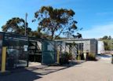
Additions
to Nursery
|
October
2013
Spring walks;
Additions to the Nursery: Burchardia umbellata; Navy Fleet Review;
Odour investigation at North Head; Smallpox in Manly in 1888
and Dr Watkins fined for negligence |
|
|
September
2013
Spring wildflower
walks; AGM report; Nursery igloo up and running; International
Fleet review; Caladenia carnea; Odours on North Head;
Sundew; Third Cemetery - the Antillian. |
|
Railways
on North Head
|
August
2013
Annual General
Meeting; Nursery watering system; ESBS revegetation trial: QS
Open Day; Parsonsia straminea; Springs on North Head;
Railways on North Head; Stony Range Open Day |
 Sue with
volunteers
Sue with
volunteers
|
July
2013
Tribute to Sue Halmagyi - celebrating her contributions to North
Head over the last few years.
The photo is of Robyn, Sue, Toni and Janet who were planting
out seedlings in the Nursery at the time the photo was taken.
Even two weeks before Sue passed away, she was tackling a new
project - see photo to the right. |
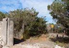
Wall now
open
|
June
2013
Thank you;
The effects of fire; AWC missing from North Head; Back in Time;
New Walk now that the wall is now open; Native Plant Nursery
Igloo is now functional; Third Cemetery - bubonic plague;
Scizaea
dichotoma |
 Wall soon
to be opened
Wall soon
to be opened
|
May
2013
Next General
Meeting - May 18 Orchids; Aboriginal Heritage Walk - Jun 22;
Climate Watch Walk - Jun 2; Echidna watch; New walk soon to
Fairfax Lookout; Xanthosia pilosa; Breakout from Quarantine;
Third Cemetery - Thomas Robinson |
 Toni and
Sue
Toni and
Sue
|
April
2013
Four year celebration; Sue Halmagyi gets an award - well done,
Sue!; record of plantings - numbers and areas planted; Glycine
microphylla; Clean up Australia Day - a sterling effort;
Mary Johnsen nominated for an award for 15yrs service at North
Head; Education Centre needs helpers; Climate Watch walk |
 Cunningham;s
skink
Cunningham;s
skink
|
March
2013
Clean Up Australia; Welcome swallows; Climate Watch Walk; Cunningham's
Skink; bug eats spider; Scott Pentland - military heritage talk;
Third Cemetery - Ebenezer John Wakeham; Weed - Scotch Thistle |
 Bandicoot
Heaven
Bandicoot
Heaven |
February
2013
Native Plant
Nursery; Bandicoot Heaven - volunteering; North Head - Michael
Rolfe; Third Cemetery - Edmund Thurlow; Old Hoard of Sovereigns;
Regrowth after fire; Xanthorrhoea flowering |
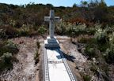
Cemetery
- Mrs de Sturler |
January
2013
Nursery news;
Tribute to Peter Caldwell; Echidna survey; Third Cemetery -
Madam de Sturler; Leptospermum juniperinum; Ocean Care
Day; Xanthorrhoea regrowth after fire |
 10 year
celebration
10 year
celebration |
December
2012
10 year celebration
of North Head Sanctuary Foundation; Ocean Care Day; My North
Head by Janet Fish; Third Cemetery - World War I returnees;
Billardia scandens |
|

Spring walk
|
November 2012
10yr celebration; Splendour of Spring; planting on the oval;
Aunty Fran talk available online; North Fort Memorial dedication;
Ocean Care Day; Blue Fish burn revelation; Calochilus;
Third Cemetery - Chinese burial; echidna |
|

Controlled burn
|
October
2012
Hazard reduction burns; whale watching; Hibbertia
diffusa; Third Cemetery - Francis Jackson; research taking
place after the burns
|
|

Duck family
on hanging swamp
|
September 2012
Spring walks; Leucopogon ericoides; duck
family on hanging swamp; The Bad Old Days; New commitee; Third
Cemetery - John O'Neill; 1898 construction of sewer pipes and
pathway from Manly to Shelly Beach. |
|

James Miller Wilson
|
August 2012
AGM - speaker Fran Bodkin; Spring bushwalks;
Patersonia sericea; a day in the life of a volunteer;
Third Cemetery - James Miller Wilson, aged 7; volunteer to help
with bandicoots; History 1933-5 - North Head designated as a
wildflower garden but then needed for defence |
|

Nursery group farewell
|
July 2012
AGM 7pm Aug 14; Memberships due; Spring Wildflower
Walks; North Head Sanctuary Champions; Childcare Centre; Acacia
myrtifolia; Climate Watch Walks; Third Cemetery - Joseph
Franklin Jun; Farewell Sue |
|

Bubonic plague victim
|
June
2012
Funding for new research project; Author talk
at Manly Art Gallery; Acacia suaveolens; Farewell from
one of our volunteers; Planting Day in June; Walls of North
Head; Third Cemetery - William James Harden |
|

Is it oil?
|
May 2012
Speaker - May 19 - Insects; bandicoot tracking;
climate watch; 3rd Cemetery C.W.Smart; North Fort; Is it oil
on the water?; Cassytha species |
|

Echidna on North Head
|
April 2012
Weeding day 16th April; Caf� at North Fort to
open 5th April; Eco awards for Mary Johnsen and Peter Nash;
Climate Watch walks; Echidna; Fires on North Head in 1931; 3rd
Cemetery - Richard W. Smith, Aseroe rubra. |
|

Signpost near arch
|
March
2012
Signpost at Blue Fish Rd to North Head Sanctuary; Xanthorrhoea
seedlings; Climate Watch Walk Mar 4; Planting Day Mar 11; Childcare
Centre comments due; Fire in 1936; Third Cemetery - Alice Lawler;
Themeda australis |
|

Weeding the oval
|
January/February 2012
World Wetlands Day Walk Feb 2; Official opening
of Bandicoot Heaven; Weeding Day Feb 5; Planting Day Feb 16
4:30pm followed by General Meeting Feb 16 7pm; Weeding on oval
Nov 2011;Third Cemetery; Dampiera Stricta |
|

Girl guides listening to Kathy Ridge
|
December 2011
Official opening of Bandicoot Heaven; Girl Guides
visit North Head; Ocean Care Day; Hakea dactyloides
|
|
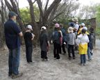
Cubs listening to Geoff Lambert
|
November
2011
"Orchids of North Head" in
Education Room on November 12; New card designs; hundreds
of cubs on North Head; Plantings; Ocean Care Day Dec 4; Walks;
Third Cemetery - Thomas Dudley;
Erythrorchis cassythoides
|
|
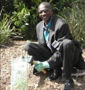
George
Malakwen
|
October
2011
Congratulations - awards, new baby; Spring Wildflower
Walks; Report from conference; Speakers included George Malakwen;
Building 20 open; QS Open Day; Third Cemetery - suicide; "Bag
It" film; Climate Watch Walk; Olearia tomentosa |
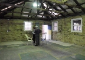
Building
20 before refit
|
September
2011
President Judy Lambert steps down; International conference;
Spring Wildflower Walks; Stony Range Fair; Refit of Building
20: Botanical artist chat; Lasiopetalum rufum; Fire on
North Head; Farewell Nelika |
|
 Rain damage
and flooding
Rain damage
and flooding
|
Aug
2011
AGM 13 Aug
2pm Julie Nettleton will display her work; thank you volunteers
from the past year; International Conference 8-11 Sep; Fire
management by Aboriginal people; Conospermum longifolium;
Floods in Nursery and Education rooms; Third Cemetery - Edward
James Edney. |
 Bandicoot
foraging
Bandicoot
foraging |
July
2011
Bandicoots
on North Head; AGM, Environmental Conference on North Head;
Third Cemetery - J Maley; Botanical drawing exhibition; Education
Centre about to move; planting a new area; Monotoca elliptica |
|
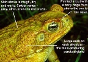
Cane toad
|
June
2011
Third Cemetery
- John Madden; D'harawal talk; ESL students; Acacia ulicifolia;
Artillery School - "too good for soldiers"; dead cane
toad found on North Head |
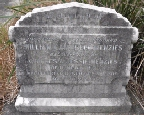
William
Menzies' grave |
May
2011
NHSF general
meeting: Third Cemetery - William Campbell Menzies; rabbits
digging in bandicoot nesting area; bandicoot spotlighting;
Inspection of Artillery School in 1937;
Xanthorrhoea sp
|
 Scenic
Drive planting
Scenic
Drive planting
|
April
2011
Bandicoots and Banksia Scrub;
Q-Station lectures; Walk and Talk by Peter McLaren; Third Cemetery
- Nursing Sister Elizabeth McGregor; Sydney NP Plan of Management;
Skeleton with typewriter; Planting along Scenic Drive; Platysace
linearifolia; News article from 1935 |
 Norfolk
Pine
Norfolk
Pine
|
March
2011
Avenue of Honour loop - Norfolk Pine; Q-Station lecture series;
Mystery rock shelter; Third Cemetery - 241 people buried there;
Platysace lanceolata; progress with planting program;
Notes from North Head Sanctuary Foundation planning meeting |
 Plants
next to the gym
Plants
next to the gym
|
February
2011
Planning
meeting;planting near the gym;Asparagus densiflorus; bandicoots
on the brink; Avenue of Honour; former St Patrick's Seminary;
Oplismenus aemulus; Third Cemetery - Edward Kelly |
 Avenue
of Honour
Avenue
of Honour |
January
2011
Planning meeting; planting; grant to study bandicoot habitats;
Ocean Care Day; Summerama at North Head; Sydney Harbour National
Park Plan of Management; Avenue of Honour; Hibbertia scandens;
Third Cemetery - George Braunton |
  Navigation
marker and Third Cemetry
Navigation
marker and Third Cemetry
|
December
2010
Walk led by Geoff Lambert; Thank you to volunteers; Coastal
Connections activity; new planting area near Scenic Drive;
Ocean Care Day; Indigenous Health talk at Q-Station; Navigation
marker mystery; Thysanotus tuberosus; Third Cemetery
- the story of James (Jack) Freeman
|
 Radar on
North Head
Radar on
North Head |
November
2010
Mystery Walk; Seasons Greetings cards; progress of planted area;
North Head news; Radar on North Head; Calytrix tetragona;
Q-Station lectures; Third Cemetery - the story of George Hammond |

Grave of
Annie Egan
|
October
2010
New cards available; more plantings; Climate Watch; thanks to
those who helped with display for Australian Museum; Quarantine
Station talks; Pistol range; 3rd Cemetery with story of Annie
Egan; make comment on latest proposals for Quarantine Station
|
 Third Cemetery
Third Cemetery |
September
2010
Wildflower walks;Beauty of Biodiversity - art display; Quarantine
Station; Year of Biodiversity at Museum; Hospital Picnic Grounds;
Third Cemetery |
 Siân
Waythe
Siân
Waythe |
August
2010
AGM speaker - Andy Donnelly, Science Partnerships Director
EarthWatch Institute; new card designs; North Head Sanctuary
Management Plan; Sunday at the Sanctuary; Working Bee; Siân
Waythe profile; 1873 shipwreck on North Head
|
|
|
|
|
|
|
 Stone Obelisk
Stone Obelisk |
April
2010
"Treasuring
our Planet" exhibition, planting mulched area, Cabbage
Tree Bay Management Plan and special day, awards for two members,
Mystery of stone obelisk |
 Planting
and mulching
Planting
and mulching
|
March
2010
Geoff Bailey's news, planting report, Profile - Rachel Miller
(NPWS ranger), Mystery on North Head - ruined infirmaries -
by Geoff Lambert |
 Planting
degraded area
Planting
degraded area |
January/February
2010
Geoff Bailey
to speak at 24th Feb meeting, weeding day 7th Feb, Sydney Harbour
NP Plan of Management due for comment, tawny frogmouth |


.jpg)